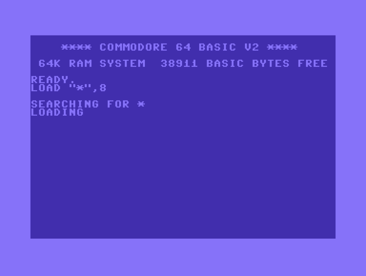

Build 6 - screenshot after boot command
Duration: 1.61 seconds
OUTPUT: STDOUT:
Screenshot

| Test Name | Duration (s) | Result |
|---|---|---|
| build 1 - rx client | 0.15 | PASS |
| build 2 - tx client | 0.13 | PASS |
| Build 3 - start relay server | 0.00 | PASS |
| Build 4 - start TX vice instance | 0.00 | ERROR |
| Build 4 - start RX vice instance | 0.00 | ERROR |
| Build 5 - send RUN to both | 6.53 | PASS |
| Build 6 - screenshot after boot command | 1.61 | PASS |
| Build 7 - terminate all | 3.05 | PASS |
Duration: 0.15 seconds
OUTPUT: Compile cc65: Assemble ca65: Link ld65: Create blank d64: OPENCBM: sucessfully loaded libopencbm.so D64 disk image recognised: /testrunnerapp/cc65_rx_output/rxtest.d64, 35 tracks. Unit 8 drive 0: D64 disk image attached: /testrunnerapp/cc65_rx_output/rxtest.d64. formatting in unit 8 ... Unit 8 drive 0: D64 disk image detached: /testrunnerapp/cc65_rx_output/rxtest.d64. Format and copy to d64: OPENCBM: sucessfully loaded libopencbm.so D64 disk image recognised: /testrunnerapp/cc65_rx_output/rxtest.d64, 35 tracks. Unit 8 drive 0: D64 disk image attached: /testrunnerapp/cc65_rx_output/rxtest.d64. writing file `RXTEST.PRG' as `RXTEST.PRG' to unit 8 Unit 8 drive 0: D64 disk image detached: /testrunnerapp/cc65_rx_output/rxtest.d64. STDOUT:
No screenshot available.
Duration: 0.13 seconds
OUTPUT: Compile cc65: Assemble ca65: Link ld65: Create blank d64: OPENCBM: sucessfully loaded libopencbm.so D64 disk image recognised: /testrunnerapp/cc65_tx_output/txtest.d64, 35 tracks. Unit 8 drive 0: D64 disk image attached: /testrunnerapp/cc65_tx_output/txtest.d64. formatting in unit 8 ... Unit 8 drive 0: D64 disk image detached: /testrunnerapp/cc65_tx_output/txtest.d64. Format and copy to d64: OPENCBM: sucessfully loaded libopencbm.so D64 disk image recognised: /testrunnerapp/cc65_tx_output/txtest.d64, 35 tracks. Unit 8 drive 0: D64 disk image attached: /testrunnerapp/cc65_tx_output/txtest.d64. writing file `TXTEST.PRG' as `TXTEST.PRG' to unit 8 Unit 8 drive 0: D64 disk image detached: /testrunnerapp/cc65_tx_output/txtest.d64. STDOUT:
No screenshot available.
Duration: 0.00 seconds
OUTPUT: relay_server started on port 6501 STDOUT:
No screenshot available.
Duration: 0.00 seconds
OUTPUT: 'ViceInstance' object has no attribute 'output' STDOUT:
No screenshot available.
Duration: 0.00 seconds
OUTPUT: 'ViceInstance' object has no attribute 'output' STDOUT:
No screenshot available.
Duration: 6.53 seconds
OUTPUT: Sent RUN to vice1: (C:$f508) (C:$f508) (C:$ee63) (C:$ee63) (C:$ee60) (C:$ee60) Sent RUN to vice2: (C:$ee5a) (C:$ee5a) (C:$eeb2) (C:$eeb2) (C:$ee1e) (C:$ee1e) STDOUT:
No screenshot available.
Duration: 1.61 seconds
OUTPUT: STDOUT:
Duration: 3.05 seconds
OUTPUT: Stopping vice1 on port 65501 vice1 has exited. Stopping vice2 on port 65502 vice2 has exited. STDOUT:
No screenshot available.